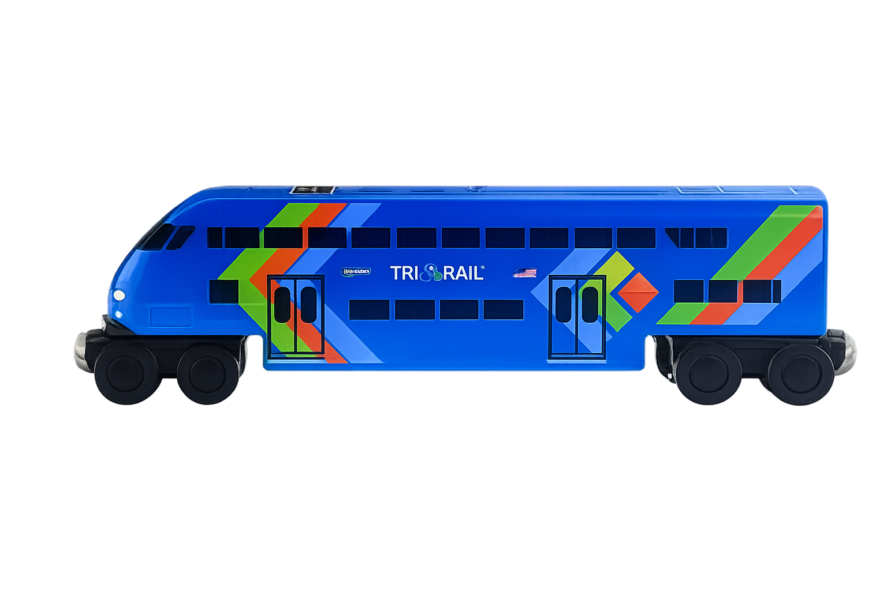

Minimum PET
1.3 seconds
Prototype data — not live


Railway safety monitoring prototype
(Smarter awareness for safer railway crossings.)
ProxiRail is a research prototype designed to present railway-crossing activity and Post-Encroachment Time measurements in a clear and understandable format.

Select a railroad ID to view its Post-Encroachment Time information and crossing feed.
Selected railroad
Minimum PET
1.3 seconds
Prototype data — not live
Average PET
2.5 seconds
Prototype data — not live
Conflict events
18
Prototype data — not live
PET risk category
High
Prototype data — not live
The crossing feed will appear here.